二姨一家(3人)、三姨一家(4人)、五阿姨一家(6人)、六阿姨一家(10人)
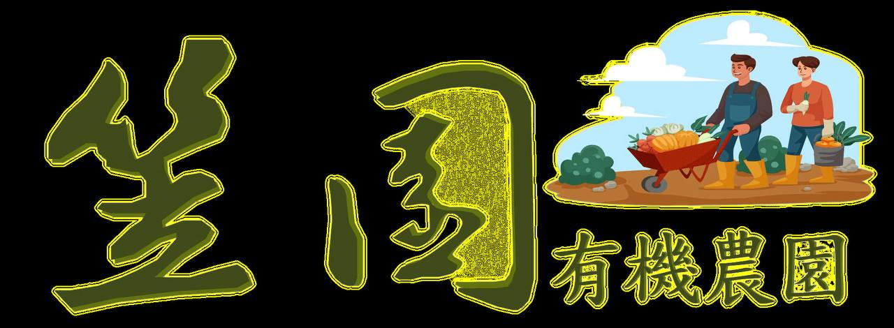
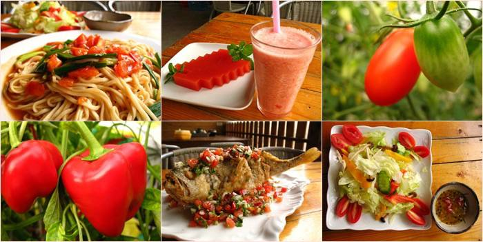
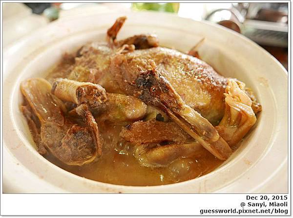
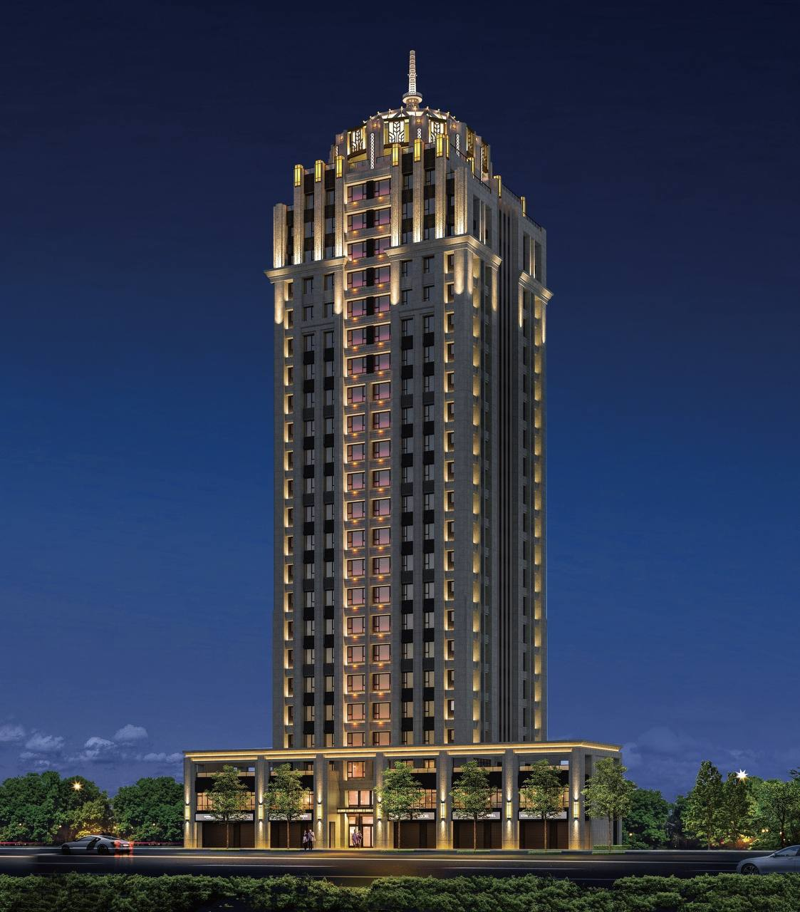
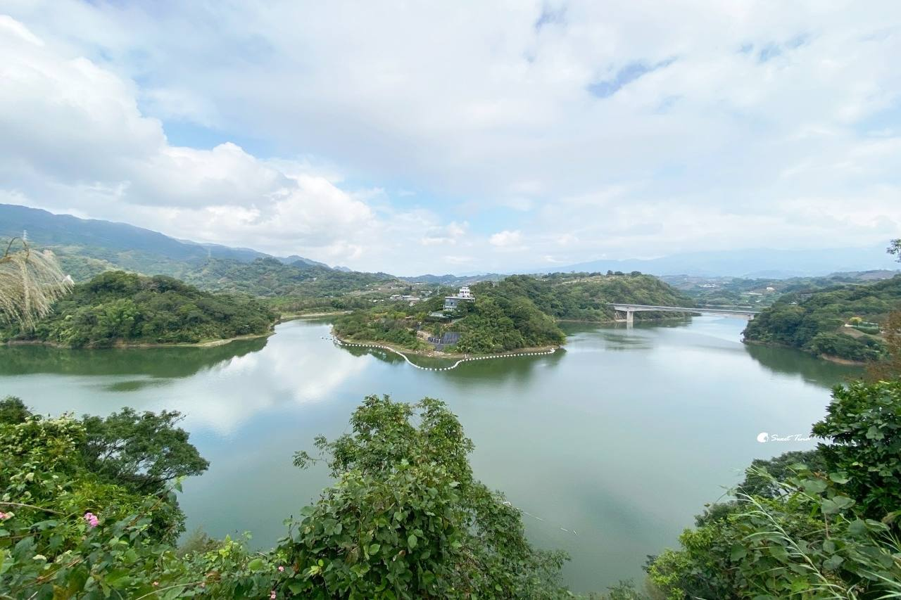
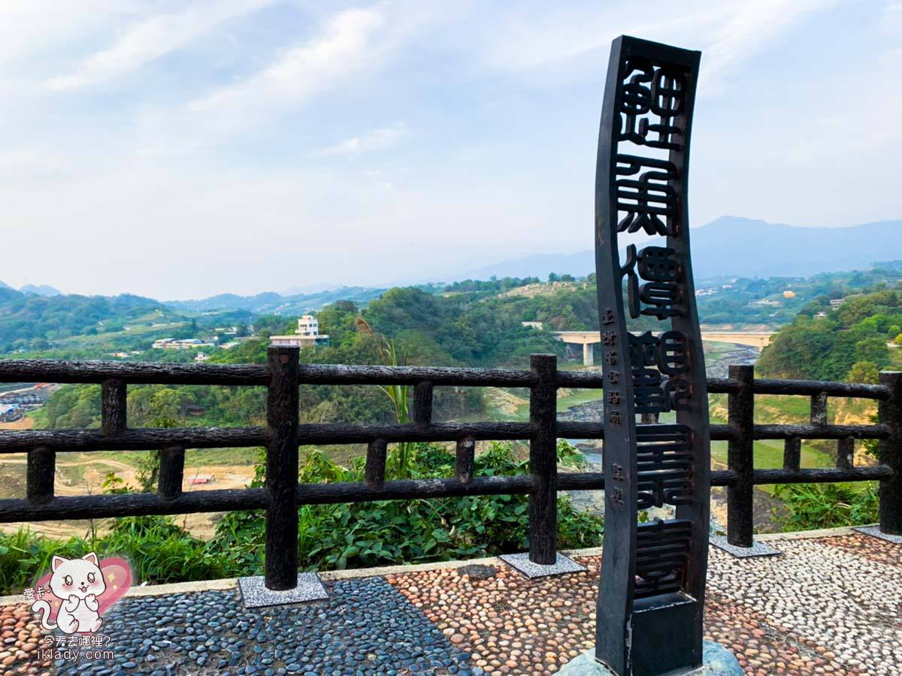
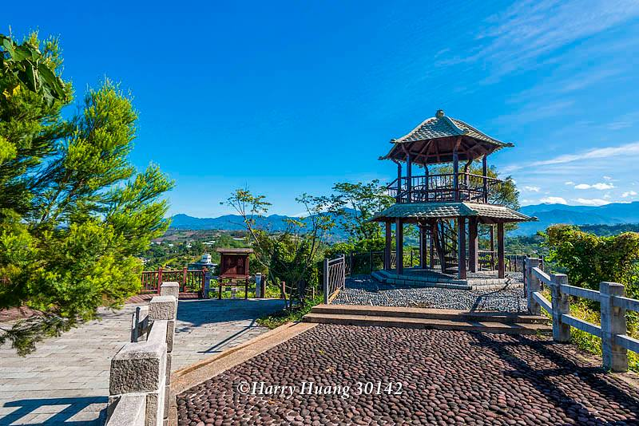
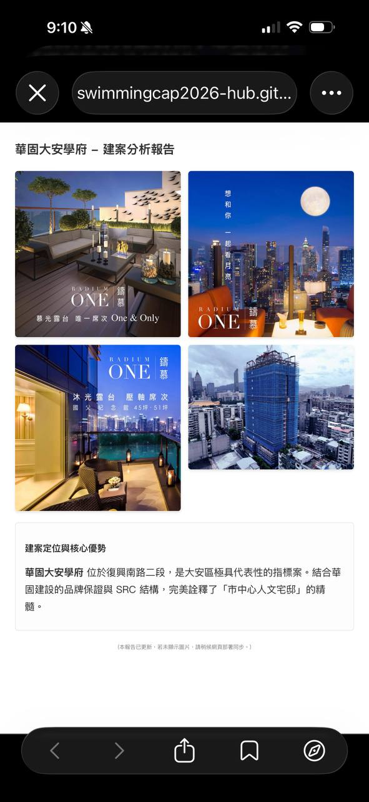
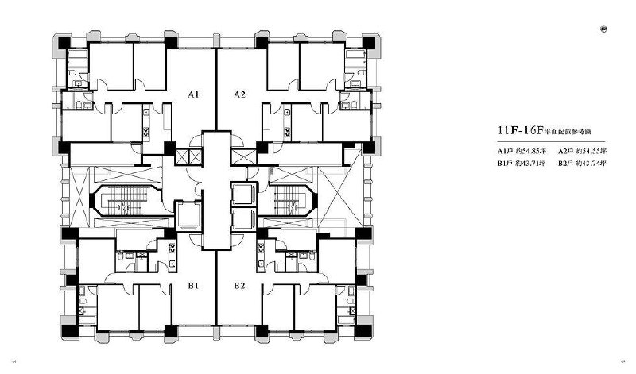
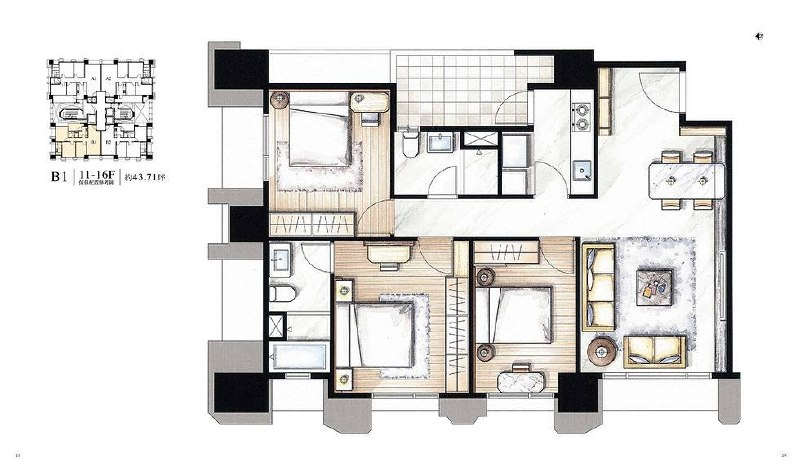
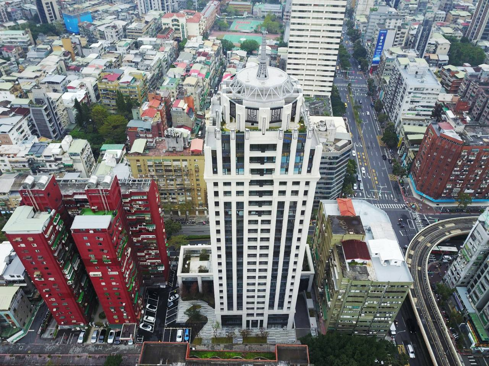
| 時間 | 行程 | 注意事項 |
|---|---|---|
| 10:00 | 台中出發 | 建議車隊行動，群組定位 |
| 11:00 | 笠園有機農園 (午餐) | 笠園以有機食材聞名，請務必確認23人長桌訂位。 |
| 12:00 | 鯉魚潭觀景台 | 在此稍作停留拍照，鯉魚潭景色開闊。 |
| 13:00 | 花露農場 (下午參觀) | 園區花卉佈景豐富，適合漫步參觀。 |
| 16:00 | 快樂返程 | 傍晚抵達台中。 |